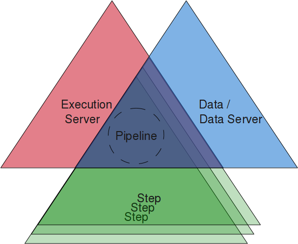

This framework builds upon OSGi, more precisely on Eclipse Equinox. It ships special OSGi-Bundles that will help to set up an ordinary pipeline system easily and quickly. Anyone how is already familiar with OSGi-applications will get into this system really quickly.
It consists of mainly three components, which are all represented by one or more OSGi-Bundles:
- Execution Server
- Data Server
- Step(s)
Combination of these components, that can be exchanged independently, will result into a specific pipeline system.
Data Server is generic, therefore implementations for Step usually refer to corresponding Data Server implementation.
For beginning, it is perfectly fine to not build a specific Data Server. Instead you can use de.mpg.mpiz.koeln.anna.server.data.simple, which is included within this project.
In order to build your own pipleline system, just create your own Steps and place resultung jar-files into 07-anna-steps folder.
See Examples for an introduction on how to set up your Eclipse working environment and how you build your own Steps.